终端打字机 terminal.svg（逐字输入 · 光标跟随 · 自动循环 · 仅暗色版）

波浪分隔线 wave-dark.svg / wave-light.svg（视差滚动 · 明暗自适应）
页脚 footer-dark.svg / footer-light.svg（流光标题 · 心跳 · 流星 · 明暗自适应）

💡 统计卡、贪吃蛇、metrics 等在线卡片无法本地预览，需按 SETUP.md 推送到 GitHub 后才能看到；
本页仅用于检查自制动画的明暗主题兼容性。